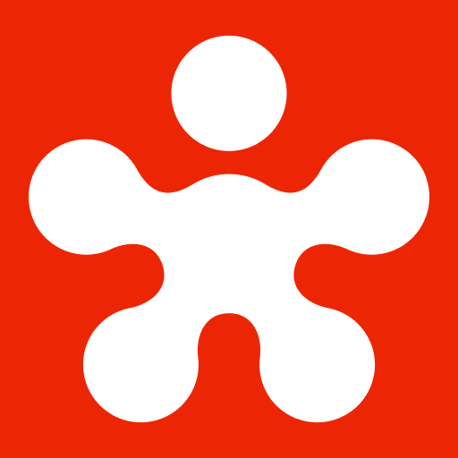
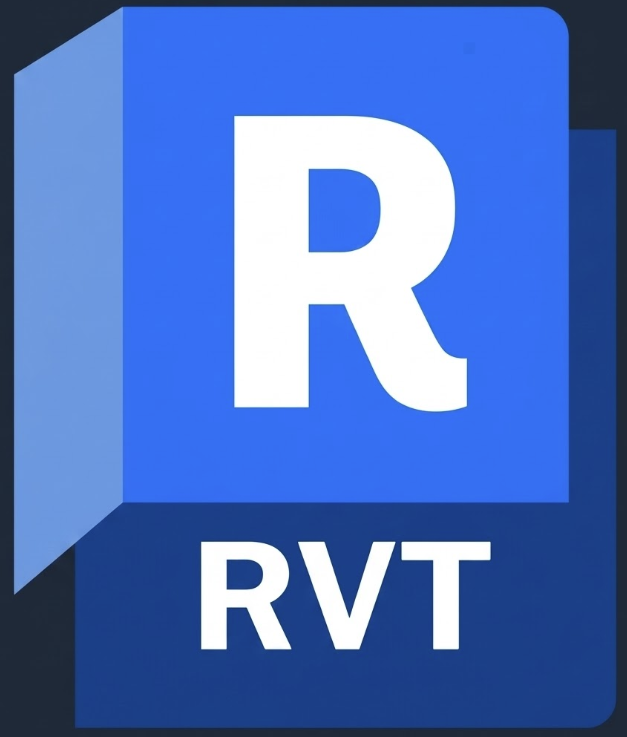
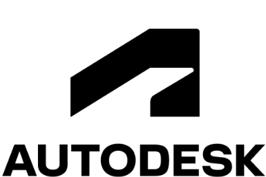
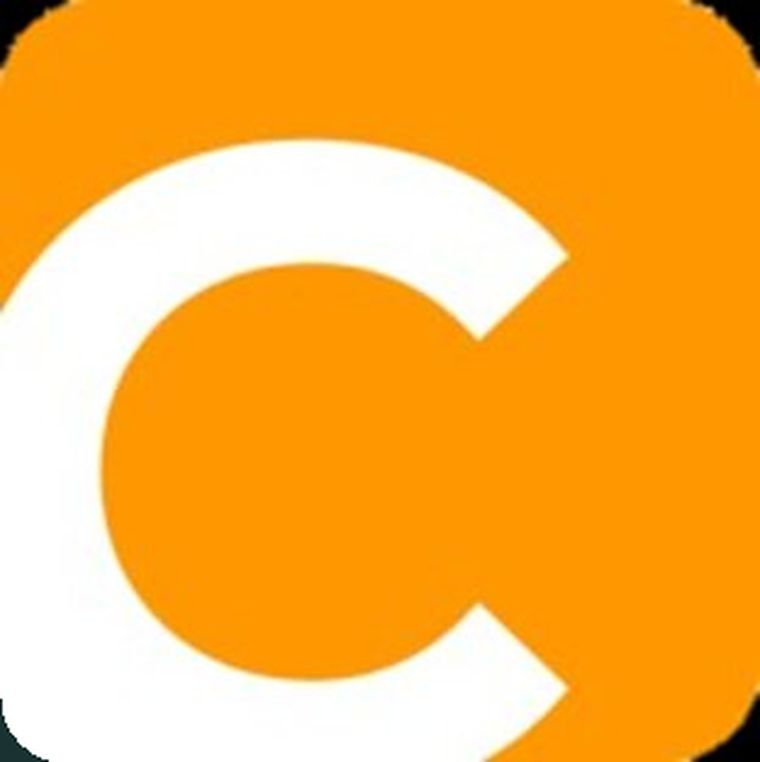
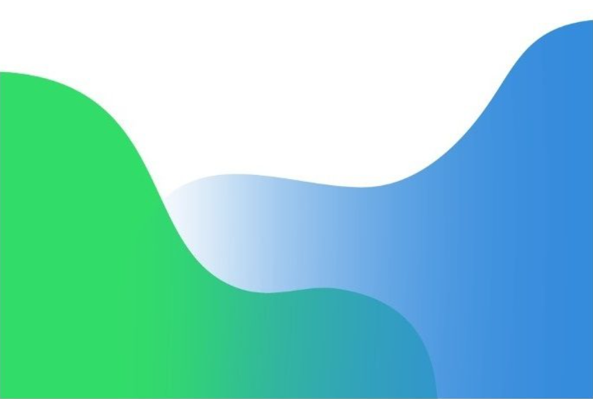
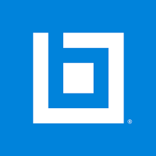
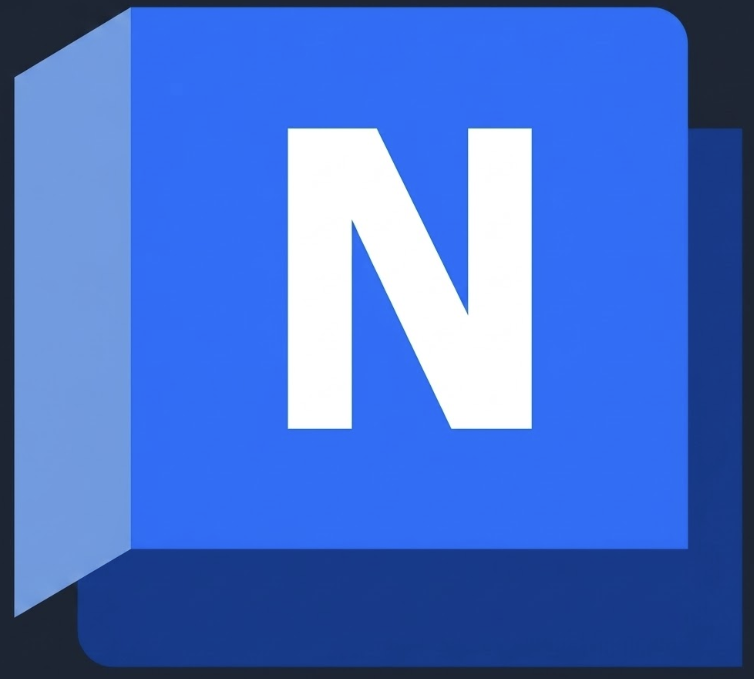
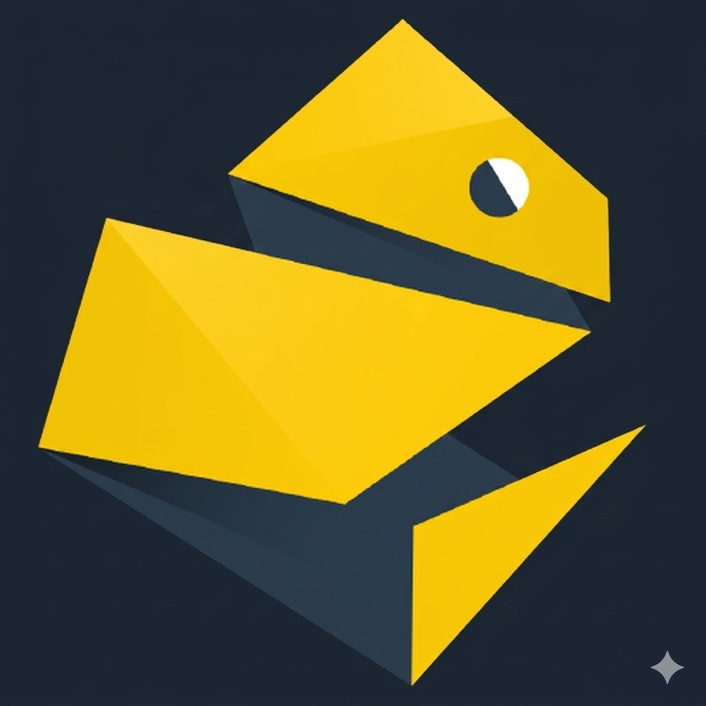
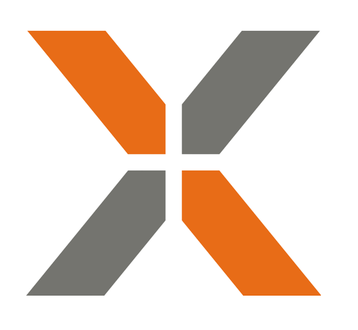
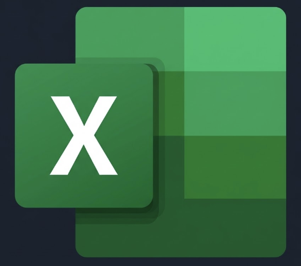

and I'm a Digital Construction Engineer.
CORE ECOSYSTEM (Tap badges for more info)

Revizto
Revit
ACC
Cupix
Metashape
Bluebeam
Navisworks
PyRevit
Aconex
ExcelAbout
I have a background in Civil Engineering and Construction Management, with a strong focus on digital coordination and construction technology. Based in South Australia, I currently work at Sarah Constructions where I manage digital delivery across the full project lifecycle — from early design through to construction.
I leverage technical expertise in Revizto, Revit, Navisworks, Autodesk Construction Cloud, and Bluebeam to structure workflows that streamline collaboration and proactively identify issues before they reach site — from shop detailing of steel structures to leading building services coordination.
My work extends into spatial validation using Cupix and drone-captured point clouds to align site conditions with design intent, as well as model data analytics via Revizto, Autodesk Data Exchange, and Power BI to enable predictive analysis and data-driven decision making.
Digital Capability
Structuring and managing project information, BIM Execution Plans, and Common Data Environments (CDE) in strict alignment with ISO 19650 standards.
Hands-on experience in design coordination during both the design and construction phases, leveraging 3D models and Bluebeam.
Integrating shop detailing workflows early in the design phase to reduce the overall program duration. The process is meticulously planned to ensure no scope gaps or design changes result in rework — working closely with the structural detailer and consultants to ensure cross-discipline coordination. The output at the end of the design phase is a structural steel model detailed to LOD400 and ready for fabrication, with architectural section details that reflect the actual build condition.
Leading mechanical, electrical, hydraulic, and fire services coordination to produce a fully coordinated and compliant model. A BIM Management Plan is agreed with the subcontractor upfront, detailing the coordination process and clash responsibility matrix. Revizto is used to automate clash tests and streamline issue assignment, with regular virtual inspections to catch what automated detection misses. Hangers are modelled where project complexity demands it for enhanced coordination outcomes.
Projects
This is the ongoing superschool project in the northern suburbs of South Australia comprising of 4 learning centres, gym, admin centre, cultural building and a significant area of landscape and play areas. Revizto was setup in the design for coordination and collaboration between the contractor and consultants. The Digital Delivery component of this project required compliance with ISO19650 and Project Specific BIM Brief developed by the Department of Infrastructure & Transport. The design models were developed to LOD 300 making it quite reliable for Quantity Takeoffs to great extent. As the lead managing the Digital Delivery process throughout construction phase, we also setup a Revit container file to host all the discipline Revit models. To automate the process of auditing against the BIM Execution Plan, custom scripting using PyRevit was utilized to ensure consistency in grid/level alignment across the various models. PowerBI dashboards have also been setup for the job to monitor changes to the model throughout construction phase.
The Cultural Institutions Collections Storage is an industrial building that houses artifacts of cultural and historical significance to South Australia. The end users of this building are History Trust, SA Museum, Department of Premier and Cabinet and SA Library. The structural detailing of this job was completed in parallel with design development to minimize program risk. This process was so meticulously planned to ensure that steel connections were carefully coordinated with the deltacore slab. For instance, all secondary steel connections to deltacore slab can only be into the cores. To facilitate the process, deltacore slab was also modelled with all the voids. Further, as part of services coordination all hangers including seismic were modelled for services and coordinated with the voids of deltacore slab. In addition to the detailed coordination within Revizto, we also utilized Cupix on the job to track progress on site and also add as a secondary layer of validation to ensure installation is in alignment with model.
Our client Australian Naval Infrastructure required a 6 storey office building and also a series of fixed and mobile towers to facilitate the bigger ship building process. The towers were the most complex in nature given the fact that we couldn't disrupt the works and as such had to be constructed offsite and transported to the facility. The offsite construction again resulted in precision detailing and coordination noting it had minimal flexibility to accommodate changes or "Fix it on site" measures. As such, each fixing point was identified and holes were predrilled in factory. Given that we had to connect this with an existing structure and it's associated services infrastructure, a point cloud scan using a terrestrial scanner was undertaken to facilitate the process. Revizto once again aided us throughout the process and it's capability to house a georeferenced point cloud along with the 3D models assisted the team greatly with coordination process. A 4D simulation (using TwinMotion) was also created to assist the stakeholders visualise the offsite construction and transportation process.
We were awarded the ECI contract for the Riverlea Retail Centre project that comprises of a series of buildings including retail shops, supermarket, childcare centre, gym and medical centre. As the ECI contractor we were responsible for design coordinating the job and also completing the structural shop drawing process concurrent with design development. We utilized Revizto as the primary coordination platform and also utilized the experience to minimize structural scope gaps and detailed level of coordination with architectural elements. Given the amount of design changes that came through during the ECI phase we also established a PowerBI dashboard that monitored the increase/decrease in major quantities (Eg. Steel tonnage, pipe run length). This dashboard helped us to justify any cost uplift that resulted as part of design changes.
Morialta Secondary School was an educational precinct comprising of two educational facilities, a gym and an admin centre. This was the first project where we established the lead services coordination role within the company in lieu of tasking this with the subcontractor team. To streamline the coordination process a BIM Execution Plan was established with a solid clash responsibility matrix. Using the logic of the clash matrix we setup our search sets and clash test sets in Revizto and utilized the advanced automation feature to ensure that clashes are assigned to the responsible party in alignment with the clash matrix. This enhanced the clash detection process and the whole clash run was automated to a great extent. In addition to just identifying hard clashes, we also added virtual inspection to our workflow that let's the user to identify issues that typically cannot be captured using the clash detection process. At the end of the job we analysed the total issues that were rectified upfront and found that hard clash detection only picks up 70-80% of the issues and the remaining can only be identified using virtual inspection.
The modular education projects comprised of a series of school projects as part of the government's accelerated school building program. The key projects I was involved with were Mitcham Primary School, Marryatville Primary School, Victor Harbor Primary School, Gladstone Primary School, Mitcham Primary School and Mawson Lakes Primary School. As the name suggests the project utilized modular or offsite construction techniques to ensure minimal disruption to school operational hours. Given the nature of construction, detailed coordination was required from the design phase through to construction in a controlled environment and assembled on site. Navisworks Manage was used as the primary collaboration platform for clash detection and virtual inspection. Additionally, a Virtual Walkthrough session (with VR headset)was organised for the school principal and students, providing them with an immersive preview of the completed facility ahead of construction completion.
Career Summary
(Tap on the cards to know more about my experience)
Connect